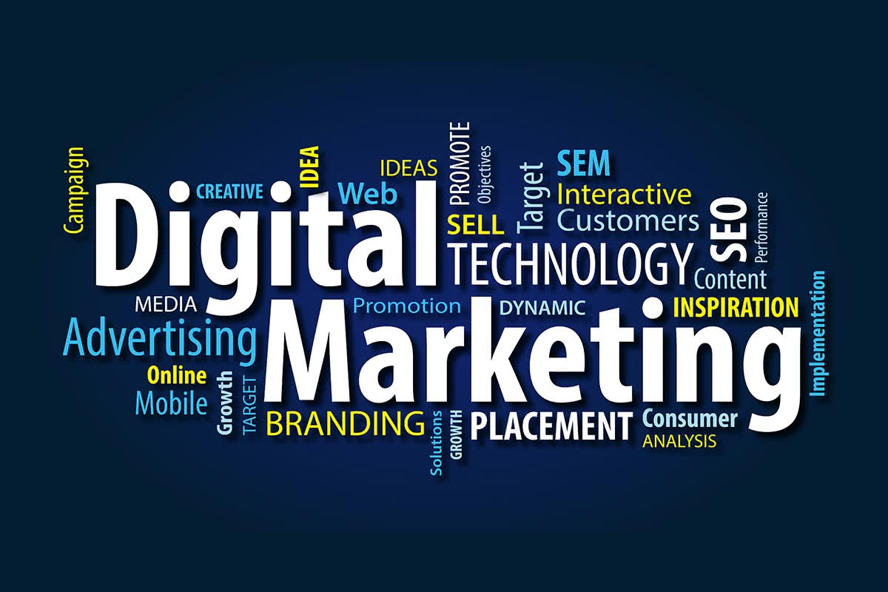

Digital marketing
What is Digital Marketing
Digital marketing encompasses all marketing efforts that promote our product or brand using electronic devices or the internet . it is a online marketing like search marketing , email marketing , social media marketing . The term marketing is not just about promoting and advertising . it is a complex concepts where we send across the right message to the right person via the right medium . Digital marketing , it is a prromoting our business through digital channels like internet , websites , email and may more. " Digital marketing :- promoting product , service via digital channels such as social media , email , search engines , website to reach traget audiences , build brand awareness , and drive sales ."
types of digital marketing channels
=>Marketing channels in Digital Marketing :- There are various type of channels in digital marketing such as:-

SEO
SEO is the process of optimizing content , technical set up , and reach of our website so that our pages appear at the top of a search engine result for specific keywords . The ultimate goal is to attract visitors to our website when they search for product or service realated to our business. There are three types of SEO.

On-pages SEO
On-pages SEO including some contents-
- keyword research and optimizing
- Content creation (quality, length, keywords)
- Meta tag(title, discription, keywords)
- Header/Heading(h1, h2, h3)
- Image optimizion
- Internal Linking
- Mobile friendless
- Page speed optimizing
- XML site maps
Off-page SEO
Off page SEO involves optimization external factors to improve search engine ranking it includes some key are as follows-
- Link building
- Social media marketing
- Content marketing
- Local SEO
- Guest Blogging
- Review management
- Social Book marketing
Technical SEO
Technical SEO is the process of optimizing a website's technical aspects to improve its search engine ranking. The goal is make it easier for search engine to crawl and an index a websites pages. This can lead to increased website traffic.
Technical SEO includes-
Page speed:Making a website faster so it's easier to navigate.
Site:using SSL, security to keep a website secure for visitor.
Mobile friendliness:ensuring a website responsive on mobile drives.
Site architecture:Examing a website architecture to eliminate friction points.
Content marketing
Content marketing is a strategic marketing approach focused on creating and distributing valuable, relevant and consistent content to attract and retain a clearly defined audience, and drive profitable customer action.
Types of content marketing:-
- Blog Post
- Videos
- Social media post
- E-book
- Infographic
- Webinars
- Emails Newsletters
Benfits of Content marketing:-
- Builds brand awarness
- Genrate leads
- Drive sales
- Enhances costomerss engagememt
- Improve SEO
Blog post
A blog post is an article or written peice published on a website or blog, so that user can understand easily the content
Featuring blog post:-
- Informative content
- Personal opinions
- Stories
- Reviews
Social media post
A social media post is message or piece of content that is shared on a a social media plateform. Post can be mix of text, images, videos, links and audio files.
Some types of social media post includes-
Short-form videos:-These are usually a few second to few minute long are highly engaging.
Image-Image can be used to convey information, promote products, or express ideas.
Live videos-Live videos are an intractive way to share content.
Audio-Audio posts use the power of voice to communicate.
E-Book
E-book is a digital book that is used to generate leads share knowledge and establish an organization as an authority in its industry.
Purpose of E-Book
E-book can be help with brand awareness solve common problems and generate new leads.
Formate of e-book
E-book are typically downloading PDF that can be read on a digital device.
Infographic
Infographics is visual representation that is used charts, graphs, diagrams, maps and pictures to communicate a message quikly and clearly.
Webinar marketing
Webinar marketing is a cost of effective way to use online events to educate an audience
about a product or service and to generate leads and conversions.
An online seminar or presentation typically live or pre recorded, broadcast to a remote audience through
web confrencing software.
Types of webinar:-
- Educational webinars
- Product demos
- Training sessions
- Interviews
- Workshop
- Conference
- Sales
PPC(Pay-Per-Click)
PPC stands for pay per click, which is digital marketing model where advertise pay for fee each time when someone clicks on their ad. It is way to rank a website in search engine.
How PPC works?
Advertise on keywords and only pay whenever some one visit any website or any platform and
click on ad then they pay whenever they want.
What are the benfits of PPC
PPC help drive traffic to our website very fast.
When PPC is working properly, the amount is trivial because the click is worth more than what we user
pay for it.
Mobile marketing
Mobile marketing are common in this model, it is vital for marketers to understand how to communicate on the channels effectively ther are many way to communicate with our user such as mobile apps with sms.
Google analytics
Google analytics is free service that measures and reports on wwbsite traffics
and reports on website traffics and user visibilty.
It is most important for website in our website. It is most important for website where we can
see who visit in our website.
It works by adding a tracking code to each page of website and collecting information about how user
interact with site.
How does Google analytics work?
The main goal of google analytics purpose it to track our website using and we need add a snippet of javascript
code of our website's,pages than a user visit a page with this code snippet the uses a javascript file to start
tracking data and send it to google analytics.
Why we need Google analytics?
- Free of coast
- Data collection is automatics
- Easy cosmozation of result
- Helps measure internet site search
- Help us with targeting right platform
Search Engine
Search engine are the software program that provide information according to the user query.It finds
various websites or webpages that are available on the internet and given related result according to the seach.
Such as- google, bing, duckduckgo.